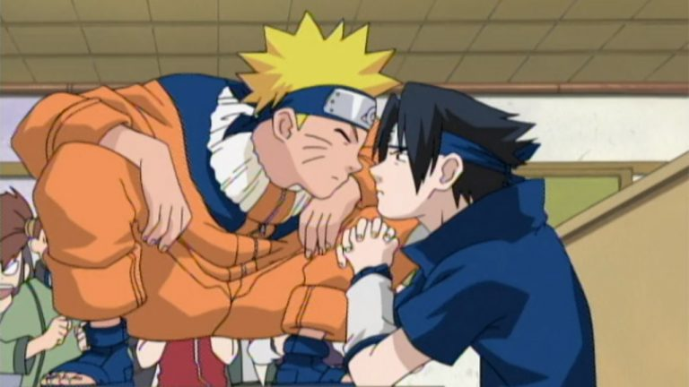
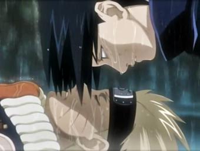

A Origem de Tudo
A criação
Naruto teve vida longa no mundo dos mangas, começou em 1999, quando o criador Kishimoto Masashi
tinha apenas 25 anos de idade. Desde então, Kishimoto criou um universo completo para o protagonista
Uzumaki Naruto e conquistou uma legião de fãs no mundo inteiro. Mas, mesmo que esse anime
seja considerado perfeito, saiba que nem sempre foi assim.
Masashi Kishimoto, autor de Naruto, deu algumas
entrevistas ao longo dos anos nas quais revelou algumas curiosidades inesperadas sobre a saga. Sua
primeira ideia para a história, por exemplo, não envolveria ninjas.
Originalmente, Naruto
seria um aprendiz de chef de cozinha, que precisa superar suas diferenças com seu mentor e aprender
a trabalhar junto com ele em uma barraca de Lámen, algo bem típico de se ver nas ruas do Japão.
Embora a ideia tenha sido totalmente modificada, o amor do garoto por Lámen continuou, sendo o prato
preferido do jovem ninja.
Inspiração
Como existem personagens demais em Naruto, Kishimoto decidiu revelar sua inspiração sobre o
personagem mais marcante de toda a saga em uma entrevista, alguns anos atrás.
Segundo
Kishimoto, a personalidade de Naruto foi inspirada em sua própria personalidade, quando criança.
“A ideia que eu tinha quando criei Naruto era de um garoto impertinente.Quando criança, eu era pobre e sempre pensava muito, até mesmo sobre coisas que eu não deveria pensar. Naruto foi criado com base em mim mesmo quando criança, mas eu quis que ele fosse diferente de como eu era.”

É uma revelação interessante, tendo em vista que muitos personagens são baseados em pessoas
conhecidas pelo autor ou até mesmo personagens de outras obras. É raro encontrarmos personagens
que são baseados em seus próprios autores.
No fim das contas, basear Naruto em si mesmo
deu muito certo para Masashi Kishimoto, já que o mangá vendeu milhões de cópias e o anime foi um
dos mais bem sucedidos da última década.
Informação Bônus: Kishimoto afirma que quem o inspirou a criar Naruto foi Toriyama Akira, o criador de Dragon Ball.
A criação - parte 2
O autor explica que o processo para aprovação do enredo da história de um mangá novo pode ser corrido e burocrático.
“São produzidas três versões do seu material, e os editores decidem o que publicar baseado neles. Se forem aprovados, o criador tem apenas 2 meses até sua história ser publicada. O escritor não possui muito tempo para se preparar para as semanas de entrega e deixar o trabalho bom o suficiente”.
“Quando eu conheci os editores, eu sabia apenas uma coisa: eu queria Naruto e Sasuke no final do mangá em um confronto emocionante”.
Um sucesso longo e mundial
Naruto teve uma das durações mais longas, foram mais de 17 anos no ar com episódios da animação,
enquanto os mangas eram lançados também.
Foram vendidos cerca de 200 milhões de cópias em todo
o Japão, 12 milhões na América do Norte e 17 milhões na França, com dados de 2014.